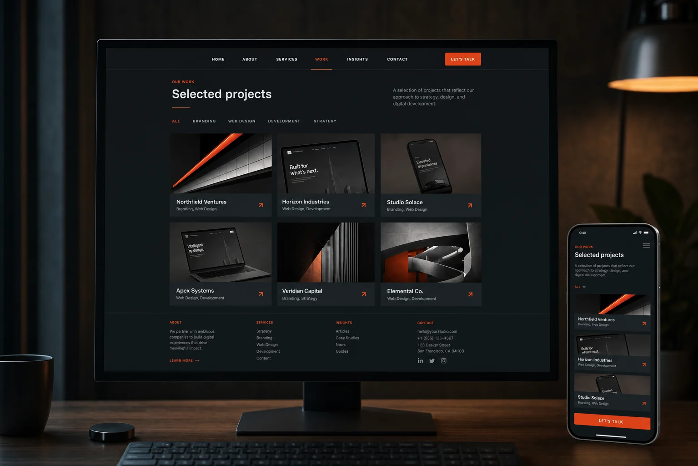
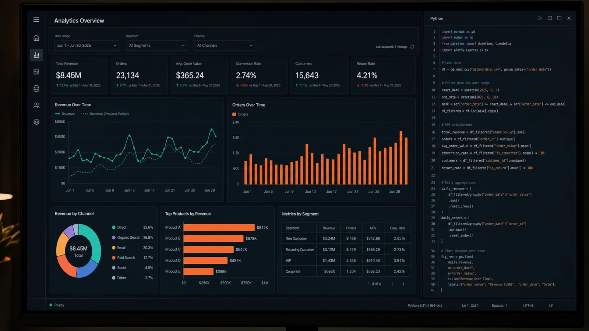

Landing PagesBUILD
WEBCRAFT is the studio of Mahmood Bilal — creating landing pages, websites, 3D interfaces, Python dashboards, automation and custom web experiences for people who want something built with intent.
Meet the studio and the person behind it.
Landing pages, websites, dashboards and 3D builds.
Frontend, Python, WebGL and automation.
Talk directly with Mahmood Bilal about your project.
WEBCRAFT is led by Mahmood Bilal. I build polished digital experiences for people and businesses — from focused landing pages to complete interactive websites.
The studio combines frontend engineering, visual design, 3D/WebGL, Python programming and automation. The goal is simple: make the final product feel premium without making it unnecessarily complicated.
See skills & proofWEBCRAFT turns ideas into responsive, interactive and technically solid web products — with direct communication from the person building them.


Frontend engineering, interactive graphics, Python development, dashboards and automation are the tools behind WEBCRAFT.
Certified skills backing this work.
Semantic markup, accessible structure and modern HTML practices.
Advanced Python programming, scripting and application development.
Complex logic, data structures and real-world Python problem solving.
Relational database design, querying and data-driven application logic.
For landing pages, websites, 3D work, Python dashboards, automation or custom 404 pages, contact WEBCRAFT directly.